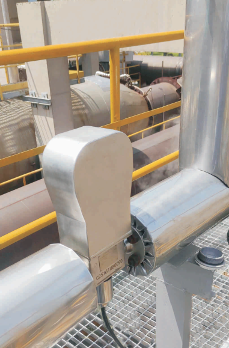

Кориолисовые массовые расходомеры Mass-EXPERT для учёта дорогостоящих теплоносителей, реагентов для водоподготовки, контроля подачи мазута и топлива на ТЭЦ. Реализация коммерческого учёта тепловой энергии по массовому расходу и температуре с высокой точностью.
Расходомеры Mass-EXPERT работают с широким спектром жидких и газообразных сред, используемых на объектах теплоснабжения и энергетики
Сетевая вода, перегретая вода с температурой до 200 °C, водяной пар низкого и среднего давления. Прямое измерение массового расхода для точного определения тепловой энергии.
Дорогостоящие химические реагенты для химводоподготовки на ТЭЦ и котельных: ингибиторы коррозии, антинакипины, флокулянты, растворы кислот для регенерации ионообменных фильтров.
Топочный мазут (М-40, М-100), печное бытовое топливо, дизельное топливо для пусковых и растопочных операций. Вязкие среды, требующие подогрева и изотермических условий измерения.
Измерение массового расхода и температуры теплоносителя для расчёта тепловой энергии на вводах ЦТП, индивидуальных тепловых пунктах (ИТП) и границах балансовой принадлежности.
Точное определение количества тепловой энергии требует измерения двух параметров — массового расхода и разности температур
Q = m × c × (Tпод – Tобр)
где Q — количество тепловой энергии (Гкал или кВт·ч),
m — масса теплоносителя (кг), измеренная кориолисовым расходомером,
c — удельная теплоёмкость теплоносителя (кДж/(кг·°C)),
Tпод — температура в подающем трубопроводе,
Tобр — температура в обратном трубопроводе.
Кориолисовая технология прямого массового измерения — оптимальное решение для задач теплоснабжения и энергетики
Исключает погрешность от переменной плотности теплоносителя при изменении температуры. Классические объёмные счётчики требуют коррекции — кориолисовый метод даёт точный результат сразу.
Специальное высокотемпературное исполнение до +350 °C для перегретой воды и пара. Устойчивость к тепловым расширениям без потери точности.
Трансмиттеры ME200 (Ex) со взрывозащитой Ex d ib IIC T6 Gb для работы в котельных и на топливном хозяйстве ТЭЦ. Сертификат ТР ТС 012.
Сенсоры U-типа создают минимальное гидравлическое сопротивление — важно для систем теплоснабжения с ограниченным располагаемым напором.
Встроенная функция тепловычислителя (параметры теплоносителя, ΔT, массовый расход). Часовые и суточные архивы. Внесён в Госреестр СИ (№ 98506-26).
Нет подвижных частей — не требуется замена уплотнений, нет изнашиваемых элементов. Средний срок службы 20 лет. Снижение эксплуатационных затрат на узлах учёта.
Традиционные теплосчётчики с объёмными расходомерами (электромагнитными, ультразвуковыми, тахометрическими) вносят дополнительную погрешность при пересчёте объёма в массу. Mass-EXPERT измеряет массу напрямую — это исключает погрешность температурного расширения и даёт максимально точный результат для коммерческих расчётов между поставщиком и потребителем тепловой энергии. Особенно это важно в переходные периоды (осень, весна), когда температура теплоносителя сильно варьируется.

Проверенные комбинации сенсоров и трансмиттеров для типовых задач отрасли
U-образная геометрия измерительных трубок для задач теплоэнергетики. Диапазон диаметров от DN15 до DN100 перекрывает типовые расходы:
Расширенный трансмиттер с функцией тепловычислителя и взрывозащитой для котельных и топливного хозяйства:
Специальное исполнение для вязкого топлива, требующего поддержания температуры вязкости — мазута М-40, М-100, печного топлива:
Mass-EXPERT + ME200 (Ex) — полностью готовая конфигурация для коммерческого учёта тепловой энергии. Один прибор заменяет теплосчётчик, расходомер и тепловычислитель. Измерение массового расхода и температуры в подающем и обратном трубопроводах с последующим расчётом тепловой энергии. Все данные передаются по Modbus RTU в АСУ ТП или автоматизированную систему коммерческого учёта энергоресурсов (АСКУЭ).
Ключевые характеристики расходомеров Mass-EXPERT, актуальные для задач теплоснабжения и ЖКХ
Подберём оптимальную конфигурацию Mass-EXPERT для вашего объекта теплоэнергетики или ЖКХ — от котельной до теплового пункта.